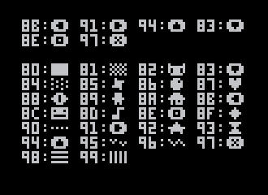

PICO-8 起動オプション
# version 0.1.10
pico-8 [オプション] [ファイル名.p8] # コマンドラインからPICO-8を起動する
-run # 起動時にfilename.p8を読み込み実行する
-width n # ウィンドウの幅を指定する
-height n # ウィンドウの高さを指定する
-windowed b # 0なら全画面モード, 1ならウィンドウモードで起動する
-sound n # 音量を指定する(0-256)
-music n # 音量を指定する(0-256)
-joystick n # ジョイスティックの割り当てをプレイヤー番号nから開始する(0-7)
-pixel_perfect b # 1ならフィルターなしの整数倍の拡大を行う(デフォルトは1)
-draw_rect x,y,w,h # PICO-8の画面を描画するウィンドウの座標とサイズを指定する
-splore # 起動時にSPLOREを実行する
-home path # config.txtやユーザーデータの参照フォルダを指定する
-desktop path # スクリーンショットとアニメGIFの保存フォルダを指定する
-screenshot_scale n # スクリーンショットの拡大率を指定する(デフォルトは3)
-gif_scale n # アニメGIFの拡大率を指定する(デフォルトは2)
-gif_len n # アニメGIFの最大録画時間を秒単位で指定する(1-120)
-gui_theme n # コードエディタの色を設定する. 0:クラシック, 1:暗い青
-timeout n # SPLOREでダウンロード開始を待つ最大時間を秒単位で指定する
-frameless b # 1なら枠なしのウィンドウにする
-show_fps b # 1ならFPSを表示する
PICO-8 仕様
- 表示: 128x128, 16色固定パレット
- 入力: 6ボタン
- カートリッジサイズ: 32k
- サウンド: 4チャンネル, 64サウンド
- コード: Lua, 最大8192トークン
- スプライト: シングルバンク 128 8x8スプライト + マップと共有の128スプライト
- マップ: 128x32 8ビットセル + スプライトと共有の128x32セル

オーディオ制御
music([n, [fade_len, [channel_mask]]]) -- 音楽を再生する. -1: 再生停止
sfx(n, [channel, [offset]]) -- SFXを再生する. -1: 再生停止, -2: ループ再生解除
カートリッジデータ制御
cartdata(id) -- 名前がidのカートリッジデータを開く(実行時に1回だけ!)
dget(idx) -- 指定番号のデータの値を取得する
dset(idx, val) -- 指定番号のデータに値を設定する
cocreate(f) -- 関数fを実行するコルーチンを作成する
coresume(c) -- コルーチンcの実行を再開する
costatus(c) -- コルーチンcが実行中ならtrueを, それ以外ならfalseを返す
yield() -- コルーチンの中で使用する. コルーチンの実行を再開命令が呼ばれるまで停止する

グラフィックス制御
camera([x, y]) -- カメラ位置を設定する
circ(x, y, r, [col]) -- 円を描画する
circfill(x, y, r, [col]) -- 塗りつぶされた円を描画する
clip([x, y, w, h]) -- 描画範囲を設定する
cls([col]) -- 画面をクリアする. col=クリア色
color(col) -- デフォルトの描画色を設定する
cursor(x, y) -- カーソル位置を設定する
fget(n, [f]) -- スプライトフラグの値を取得する
flip() -- バックバッファを画面に表示する(30fps)
fset(n, [f], v) -- スプライトフラグの値を設定する
line(x0, y0, x1, y1, [col]) -- 直線を描画する
pal(c0, c1, [p]) -- 色0を色1に置き換える. p=0: 描画パレット, p=1: 画面パレット
palt(col, t) -- 指定した色の透過処理をt(ブール値)に設定する
pget(x, y) -- ピクセルの色を取得する
print(str, [x, y, [col]]) -- 文字列を出力する
pset(x, y, [col]) -- ピクセルの色を設定する
rect(x0, y0, x1, y1, [col]) -- 矩形を描画する
rectfill(x0, y0, x1, y1, [col]) -- 塗りつぶされた矩形を描画する
sget(x, y) -- スプライトシートのピクセルの色を取得する
spr(n, x, y, [w, h], [flip_x], [flip_y]) -- スプライトを描画する
sset(x, y, [col]) -- スプライトシートのピクセルの色を設定する
sspr(sx, sy, sw, sh, dx, dy, [dw, dh], [flip_x], [flip_y]) -- スプライトシートから指定範囲を描画する
マップ制御
map(cel_x, cel_y, sx, sy, cel_w, cel_h, [layer]) -- マップを描画する. layer指定時はスプライトフラグと一致した時のみ描画される. スプライト0番は描画されない
mapdraw(cel_x, cel_y, sx, sy, cel_w, cel_h, [layer]) -- マップを描画する. 'map()'と同じ
mget(x, y) -- マップのセルの値を取得する
mset(x, y, v) -- マップのセルの値を設定する
数学関数
-32768.0 .. 32767.99 -- 値の範囲
abs(x) -- xの絶対値
atan2(dx, dy) -- (dx, dy)を0から1の角度に変換する
band(x, y) -- ビット単位の論理積
bnot(x) -- ビット単位の否定
bor(x, y) -- ビット単位の論理和
bxor(x, y) -- ビット単位の排他的論理和
cos(x) -- xの余弦, 1周期は0から1の範囲
flr(x) -- 切り捨て
-flr(-x) -- 関数ではないが, 切り上げとして使える
max(x, y) -- x,yの最大値
mid(x, y, z) -- x,y,zの中間の値
min(x, y) -- x,yの最小値
rnd(x) -- 0以上x未満の乱数
sgn(x) -- 引数の符号を-1か1で返す. sgn(0)の時は1になる
shl(x, y) -- 左シフト
shr(x, y) -- 右シフト
sin(x) -- xの正弦, 1周期は0から1の範囲, 正負は反転している
sqrt(x) -- xの平方根
srand(x) -- 乱数のシードを設定する
演算子
a = b -- assignment
a + b -- sum
a - b -- sub
a * b -- mul
a / b -- div
a % b -- mod
a ^ b -- pow
a += b -- sum to
a -= b -- sub to
a *= b -- mul to
a /= b -- div to
a %= b -- mod to
a ^= b -- pow to
a == b -- compare equals
a ~= b -- compare not equals
a != b -- compare not equals
a > b -- compare greater than
a < b -- compare less than
a >= b -- compare greater than or equals
a <= b -- compare less than or equals
not a -- boolean negation
a and b -- boolean conjunction
a or b -- boolean disjunction
(a) -- operation delimiters
flow control
::label:: -- label
goto label -- jump
if (<condition>) -- inline if
if <condition> then
-- if block
elseif <condition> then
-- elseif block
else
-- else block
end
while <condition> do
-- while block
end
for <var> = <first>, <last>, <step> do
-- for block
end
メモリ操作
cstore(dest_addr, src_addr, len, [filename]) -- RAMまたは指定されたファイルからROMにバイト列をコピーする. マルチカートリッジ対応
memcpy(dest_addr, src_addr, len) -- バイト列をコピーする
memset(dest_addr, val, len) -- lenバイトにvalを設定する
peek(addr) -- RAMの指定アドレスのバイトを取得する
poke(addr, val) -- RAMの指定アドレスにvalを書き込む
reload(dest_addr, src_addr, len, [filename]) -- ROMまたは指定されたファイルからRAMにバイト列をコピーする. マルチカートリッジ対応
種類
1. ベースRAM(32kB)
2. カートリッジROM
3. Lua RAM(1MB)
RAM配置
0x0 - グラフィックス
0x1000 - グラフィックス2/マップ2(共有)
0x2000 - マップ
0x3000 - グラフィックス属性
0x3100 - 音楽
0x3200 - SFX
0x4300 - ユーザーデータ
0x5e00 - 永続カートリッジデータ(256byte)
0x5f00 - 描画状態
0x5f40 - ハードウェア状態
0x5f80 - GPIOピン(128byte)
0x6000 - 画面(8kB)
マウス
poke(0x5f2d, 1) -- マウスリスナーを初期化する
stat(32) -- x座標を取得する
stat(33) -- y座標を取得する
stat(34) -- ボタン状態をビット列で取得する(1=左ボタン, 2=右ボタン, 4=中央ボタン)
拡張グラフィックスモード
poke(0x5f2c, 0) -- standard, 128x128
poke(0x5f2c, 1) -- 水平方向に引き伸ばし, 64x128
poke(0x5f2c, 2) -- 垂直方向に引き伸ばし, 128x64
poke(0x5f2c, 3) -- 拡大, 64x64
poke(0x5f2c, 4) -- 標準, 128x128
poke(0x5f2c, 5) -- 左半分の鏡像
poke(0x5f2c, 6) -- 右半分の鏡像
poke(0x5f2c, 7) -- 左上4分の1の鏡像
raspberry pi / pocketchip gpio
-- run pico-8 as root ("sudo pico-8")
-- values in [0..255]
poke(0x5f80, val) -- send val to gpio0
poke(0x5f81, val) -- send val to gpio1
-- et cetera
実行制御
_draw() -- 画面の描画タイミング毎に呼ばれる
_init() -- プログラム開始時に一度だけ呼ばれる
_update() -- 30fpsの更新タイミング毎に呼ばれる
_update60() -- 60fpsの更新タイミング毎に呼ばれる
コマンドライン
assert(condition) -- conditionがtrueか確認する
cd .. -- 親ディレクトリに移動する
cd [dirname] -- 現在のディレクトリを変更する
dir() -- 現在のディレクトリの要素一覧を表示する
exit() -- PICO-8アプリを終了する
export(filename.html, [cart1.p8, cart2.p8 ... cart15]) -- htmlでゲームを書き出す. 15までの拡張カートリッジの指定が可能
export(filename.png) -- スプライトシートを書き出す
export(filename.wav) -- 現在のSFX/音楽を書き出す
export(filename%d.wav) -- すべてのSFXを通し番号つきのファイルとして書き出す
extcmd(cmd) -- control screenshots; "label" = cart label; "screen" = screenshot; "rec" = start gif; "video" = save gif
folder() -- ホストOSでカートリッジフォルダーを開く
help() -- システムコマンドの要約を表示する
import(filename.png) -- スプライトシートを読み込む. 128x128のpngで色がPICO-8のパレットに一致することが前提
info() -- カートリッジ情報を表示する
install_demos() -- デモカートリッジをインストールする
install_games() -- 代表的なBBSカートリッジをインストールする
keyconfig() -- プレイヤーボタンのキーボード割り当てを設定する
load("@clip") -- カートリッジをクリップボードから読み込む(BBS対応)
load(filename) -- カートリッジを読み込む(マルチカートリッジ対応)
ls() -- 現在のディレクトリの要素一覧を表示する
menuitem(index, [label, callback]) -- ポーズメニューに要素(1-5)を追加する. ラベルとコールバックが指定されないと要素を削除する
mkdir(dirname) -- ディレクトリを作成する
printh(str, [filename, overwrite]) -- 文字列をターミナルに出力する. 指定したファイルへの追記や上書きが可能
reboot() -- PICO-8を再起動する
resume() -- カートリッジの実行を再開する
run() -- カートリッジを実行する
save("@clip") -- カートリッジをクリップボードに保存する(BBS対応)
save(filename) -- カートリッジを保存する
shutdown() -- PICO-8アプリを終了する
splore() -- カートリッジを閲覧する
stat(x) -- システムの状態を取得する. 下記参照
time() -- 最後に起動してからの経過秒を返す
type(v) -- vの型(数値, 文字列, テーブル)を返す
stats
stat(0) -- memory usage in [0..1024]
stat(1) -- cpu usage; 1.0 == 100% cpu at 30fps
stat(4) -- clipboard; after user pressed ctrl-v
stat([16..19]) -- index of playing sfx on channels [0..3]
stat([20..23]) -- note number (0..31) on channels [0..3]
stat(32) -- mouse x coord; see "peek / poke" tab
stat(33) -- mouse y coord; see "peek / poke" tab
stat(34) -- mouse button bitmask; see "peek / poke" tab
JavaScript
pico8_gpio[] // GPIOピンの読み書きをする
private functions (use carefully)
_get_frames_skipped() -- used automatically by _mainloop()
_get_menu_item_selected(n) -- returns true or false if the n-th menu item is selected; n in [1..5]; used automatically by _mainloop()
_mainloop() -- main pico-8's "while true"
_pausemenu[n].callback() -- execute the n-th menu item's callback; n in [1..5]; used automatically by _mainloop()
_set_mainloop_exists(n) -- ?
_update_buttons() -- used automatically by _mainloop()
holdframe() -- _draw(), _update()が自動で使用する

文字列操作
#s -- 文字列の長さ
"three " .. 4 -- 文字列の結合
sub(str, from, [to]) -- 部分文字列
"123.45" + 0 -- cast parseable string to number; "0xAF" format for hex
special characters
print("l:\x8b r:\x91 u:\x94 d:\x83 o:\x8e x:\x97")
テーブル操作
add(t, v) -- 値vをテーブルに追加する
all(t) -- ループ処理'for v in all(t)'で使用する
count(t) -- テーブルの要素数を返す
del(t, v) -- 値がvの最初の要素を削除する
foreach(t, f) -- 各要素について関数fを呼ぶ
pairs(t) -- ループ処理'for k,v in pairs(t)'で使用する
mt = {} -- init metatable
setmetatable(t, mt) -- set metatable mt to table t
メタテーブル :: special keys
-- object oriented programming; invoked as 't:foo()' / 't:bar()'
fun = {}
function fun.foo(t) dosomething() end
function fun.bar(t) dosomethingmore() end
mt.__index = fun
-- property assignment; invoked when calling 't[k] = v'
function mt.__newindex(t, k, v) rawset(t, k, v) end
-- weak references; keys and / or values
mt.__mode = "k" or "v" or "kv"
-- treat a table like a function; invoked when calling 't()'
function mt.__call(t) dosomething() end
-- hide metatable; returned by 'getmetatable(t)'
public_mt = {}
mt.__metatable = public_mt
-- string casting; returned by 'tostring(t)'
function mt.__tostring(t) return tostring(t) end
-- table length; returned by '#t'
function mt.__len(t) return #t end
メタテーブル :: mathematic operators
-- unary minus; returned by '-t'
function mt.__unm(t) return -t end
-- addition; returned by 'a + b'
function mt.__add(a, b) return a + b end
-- subtraction; returned by 'a - b'
function mt.__sub(a, b) return a - b end
-- multiplication; returned by 'a * b'
function mt.__mul(a, b) return a * b end
-- division; returned by 'a / b'
function mt.__div(a, b) return a / b end
-- modulo; returned by 'a % b'
function mt.__mod(a, b) return a % b end
-- involution; returned by 'a ^ b'
function mt.__pow(a, b) return a ^ b end
-- concatenation; returned by 'a .. b'
function mt.__concat(a, b) return a .. b end
メタテーブル :: comparison operators
-- check for equality; returned by 'a == b'
function mt.__eq(a, b) return a == b end
-- check for less-than; returned by 'a < b'
function mt.__lt(a, b) return a < b end
-- check for less-than-or-equal; returned by 'a <= b'
function mt.__le(a, b) return a <= b end
共通
- 全画面表示:
- alt + enter / cmd + f
- 終了:
- alt + f4 / cmd + q
- 再読み込み＆実行:
- ctrl + r
- 保存:
- ctrl + s
- 消音:
- ctrl + m
- FPS表示:
- ctrl + 1
- スクリーンショット:
- ctrl + 6 / f6 / f1
- ラベル画像保存:
- ctrl + 7 / f7 / f2
- 録画開始:
- ctrl + 8 / f8 / f3
- 動画保存:
- ctrl + 9 / f9 / f4
- キーボードカーソル:
- f10
- 編集モード切り替え:
- alt + right / alt + left
- コマンドライン補完:
- tab
SPLORE
- リスト選択:
- left / right
- カートリッジ選択:
- up / down / home / end / pageup / pagedown
- カートリッジ起動:
- x / o / menu
- お気に入り登録:
- f
スプライト / マップ エディター
- 取り消し:
- ctrl + z
- コピー (BBS対応):
- ctrl + c
- ペースト (BBS対応):
- ctrl + v
- 表示範囲移動:
- space / mmb
- スプライト切り替え:
- q / w
- 色切り替え:
- 1 / 2
- タブ切り替え:
- + / -
- フルスクリーン編集:
- tab
- ズーム:
- mousewheel
- 縦方向反転:
- f
- 横方向反転:
- v
- 回転:
- r
- 移動:
- cursors
ドローツール
- 色置き換え:
- lctrl
- 色取得:
- rmb
スタンプツール
- 透過ありスタンプ:
- lctrl
選択ツール
- 複数スプライト選択:
- shift + drag
コードエディター
- skip across words:
- ctrl + left / ctrl + right
- 領域選択:
- shift
- 単語選択:
- double click
- カット:
- ctrl + x
- コピー:
- ctrl + c
- ペースト:
- ctrl + v
- 取り消し:
- ctrl + z
- やり直し:
- ctrl + y
- インデント:
- tab
- インデント取り消し:
- shift + tab
- 行複製:
- ctrl + d
- 検索:
- ctrl + f
- 検索繰り返し:
- ctrl + g
- 関数ジャンプ:
- alt + up / alt + down
- 先頭 / 終端:
- ctrl + up / ctrl + down
- ボタングリフ:
- shift + l, r, u, d, x, o
- アイコングリフ:
- shift + qwetyipasfghjkzcvbnm
- グリフモード:
- ctrl + k
SFX / 音楽 エディター
- 再生 / 停止:
- space
- コピー:
- ctrl + c
- ペースト:
- ctrl + v
- 全ノート設定:
- shift + lmb
- 速度変更:
- < / >
- 移動:
- home, end, pageup, pagedown, mousewheel
- パターン切り替え:
- + / -
- Cmペンタトニック自動調整:
- ctrl
- 速度4倍:
- shift
- ループ再生解除:
- a
- 削除:
- backspace
エフェクト
- 0 ::
- なし
- 1 ::
- スライド
- 2 ::
- ビブラート
- 3 ::
- ドロップ(ドラムキック!)
- 4 ::
- フェードイン
- 5 ::
- フェードアウト
- 6 ::
- 高速アルペジオ(4ノート)
- 7 ::
- 低速アルペジオ(4ノート)